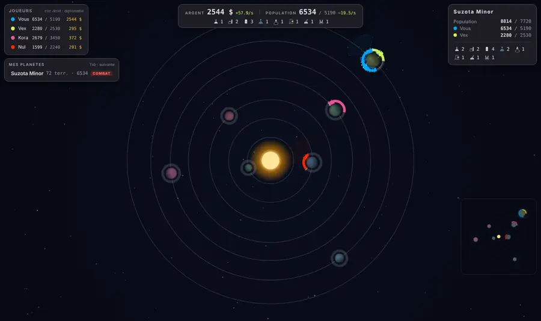
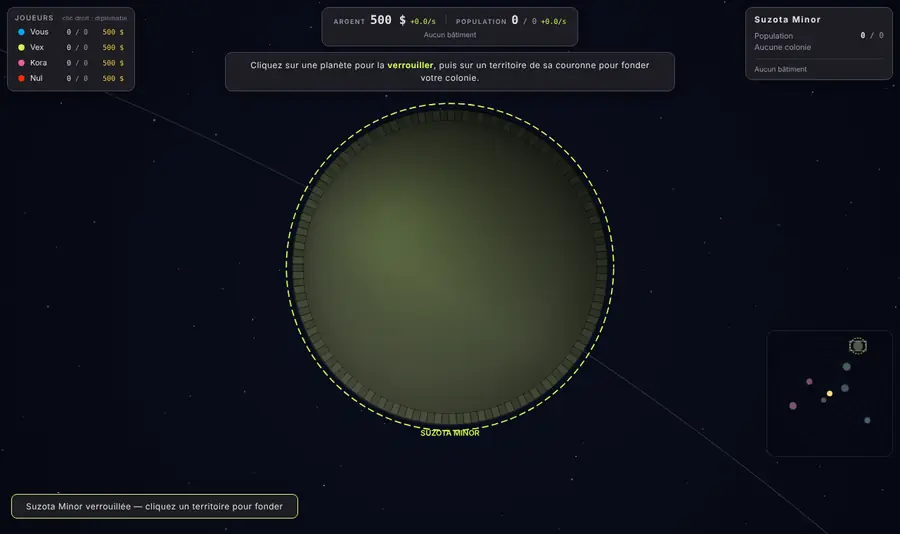
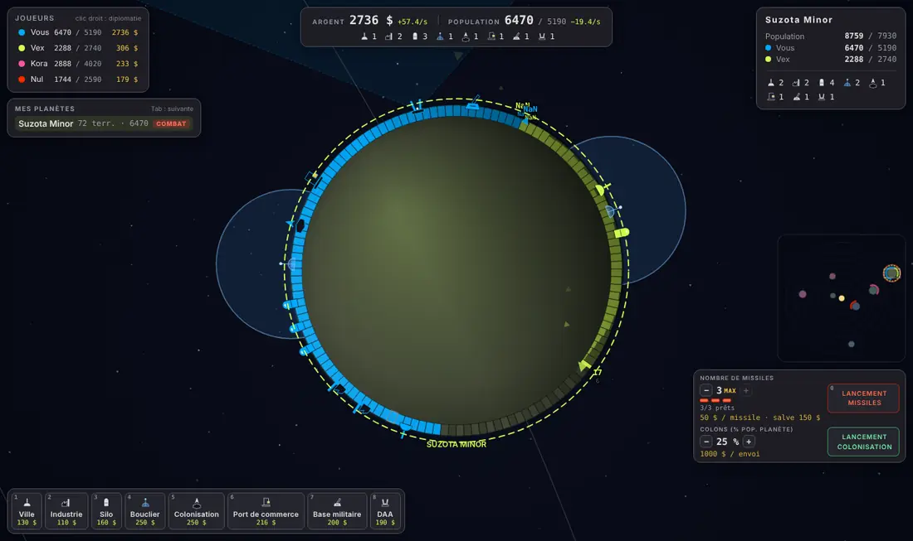
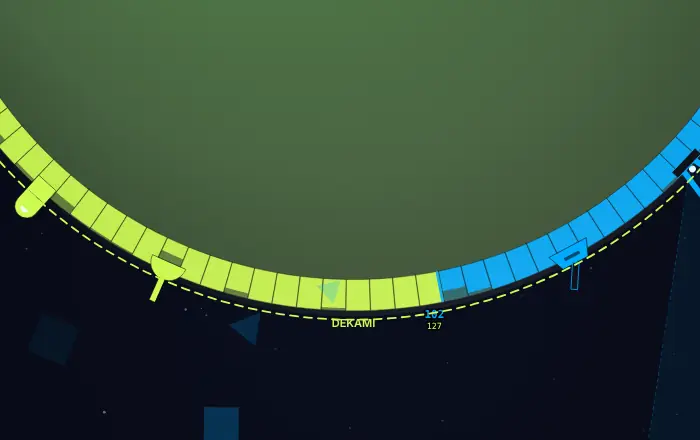
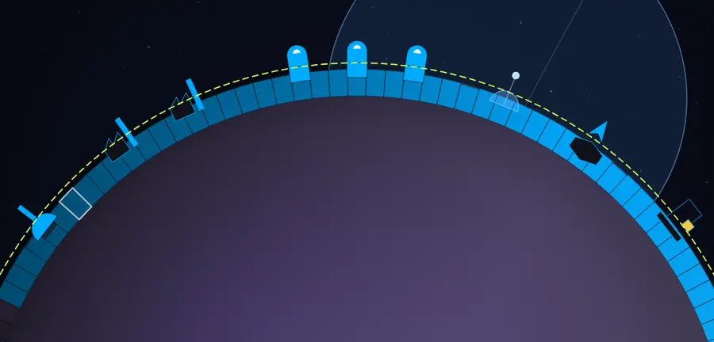
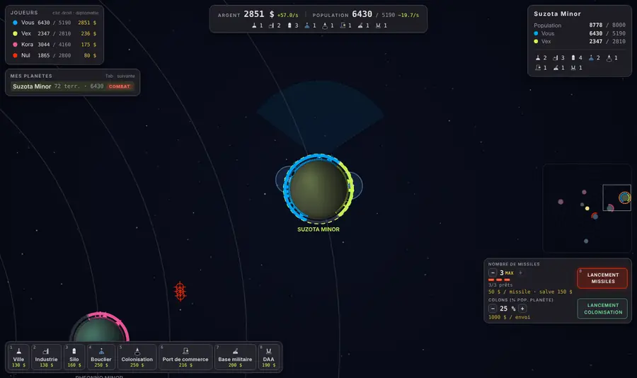
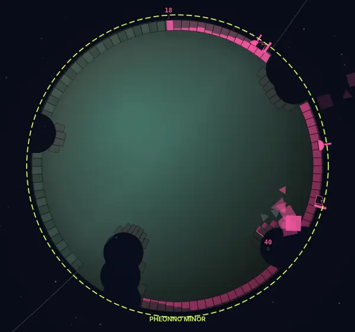
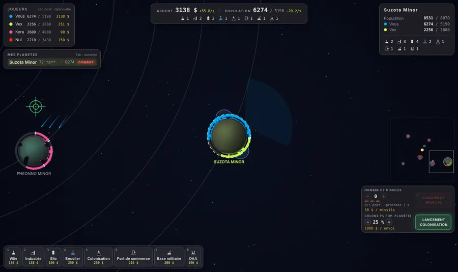
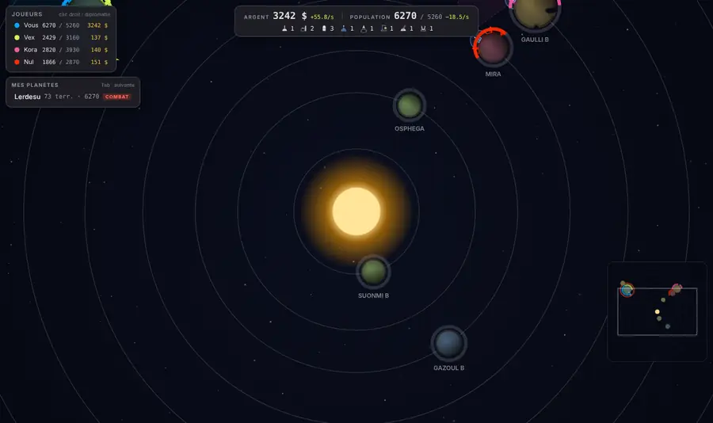
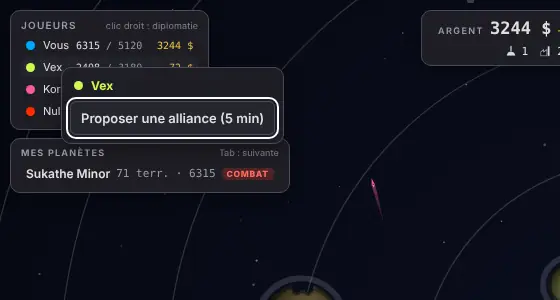

Le but du jeu
Solar Conquest est un jeu de conquête en temps réel dans un système solaire. Chaque planète est découpée en dizaines de territoires, disposés en couronne à sa surface. Vous partez d'un seul territoire et devez étendre votre empire de planète en planète, contre d'autres joueurs et des bots.

Défaite : perdre tous ses territoires. En multijoueur, la partie continue pour les autres.
Les missiles détruisent définitivement des territoires : le total diminue et le seuil de victoire s'ajuste.
Démarrer : fonder sa colonie
- Cliquez sur une planète pour la verrouiller : la caméra la suit (anneau vert en pointillés).
- Cliquez sur un territoire de sa couronne pour y fonder votre colonie, avec habitants.
- Les bots fondent ensuite les leurs, puis la partie commence.

L'écran de jeu

- En haut au centre : votre argent et votre population, avec leur progression par seconde, et vos bâtiments.
- En haut à gauche : le tableau des joueurs, puis Mes planètes, avec les alertes COMBAT et EN APPROCHE.
- En haut à droite : la planète survolée ou verrouillée (population par joueur, bâtiments).
- En bas à gauche : la barre de construction (touches 1 à 9).
- En bas à droite : le lancement des missiles et de la colonisation, et la mini-carte.
Glissez la souris pour déplacer la caméra, utilisez la molette pour zoomer. Échap annule l'action en cours ; un nouveau clic sur la planète verrouillée la libère.
Argent et population
Vous commencez avec . L'argent rentre en continu :
- chaque habitant rapporte un peu ( $/s) : un empire peuplé est un empire riche ;
- chaque industrie ajoute $/s ;
- les ports de commerce envoient des cargos qui rapportent aux deux joueurs.
La population pousse toute seule sur chaque territoire, jusqu'à un plafond de par territoire ( avec une ville). Elle pousse lentement au début, vite à mi-chemin, puis ralentit près du plafond. C'est aussi votre armée : les attaques puisent dans la population.
Surpopulation : au-dessus du plafond (après un débarquement de colons, par exemple), la population fond d'elle-même, d'autant plus vite que l'excédent est grand. Inutile donc de l'accumuler : exploitez-la vite.
Conquérir des territoires
Cliquez sur un territoire voisin des vôtres pour l'attaquer. Chaque attaque coûte et engage de votre population proche du front (à territoires ou moins).

- La défense d'un territoire est sa population, plus un petit soutien de la population voisine. Un territoire neutre résiste avec .
- Le combat dure quelques secondes : l'attaque use la défense et inversement.
- Si elle gagne, une partie de la force reste en garnison et, si elle est encore assez forte, l'attaque enchaîne sur le territoire suivant.
- Un territoire fraîchement conquis est presque vide : il est vulnérable le temps que sa population repousse.
Astuce : attaquez depuis une zone bien peuplée. Seule la population proche du front compte.
Les bâtiments
Choisissez un bâtiment dans la barre du bas (ou touche 1 à 9), puis cliquez sur la planète : le jeu le construit à l'emplacement conseillé, montré en transparence. Maj + clic pour choisir vous-même le territoire. Un territoire n'accueille qu'un bâtiment, perdu si le territoire est conquis ou détruit.

| Ville | Plafond de population et croissance ×. | |
| Industrie | $/s. | |
| Silo | Un missile, rechargé en s. | |
| Bouclier | Fait exploser les missiles avant l'impact sur la zone qu'il couvre. Touché, il s'éteint s. | |
| Colonisation | Permet d'envoyer des modules de colons vers d'autres planètes. | |
| Port de commerce | Toutes les s, un cargo part vers un autre port : pour vous et autant pour le destinataire. | |
| Base militaire | Attaques voisines plus fortes (), défense renforcée autour d'elle, et un tir d'artillerie toutes les s sur l'ennemi proche. | |
| Défense anti-aérienne | Abat les missiles et les modules ennemis qui passent dans son cône, au-dessus d'elle. |
Chaque bâtiment d'un même type sur une même planète coûte × le précédent : répartissez-vous sur plusieurs planètes.
Missiles et cratères
Avec des silos sur la planète verrouillée, cliquez sur Lancement missiles (touche 0), visez un point de la carte et cliquez. Par défaut, la salve part avec tous les missiles prêts ; les boutons − et + règlent le nombre. Chaque missile coûte .

- Les missiles montent droit, puis filent en courbe, déviés par la gravité du soleil et des planètes. Visez en anticipant le mouvement de la cible.
- Chaque impact creuse un cratère : les territoires touchés sont vidés (ils redeviennent neutres et reconquérables) ou détruits pour toujours si le trou est profond. Les planètes bombardées rétrécissent réellement.
- Les boucliers et les défenses anti-aériennes protègent contre les missiles.

Coloniser d'autres planètes
Avec un centre de colonisation sur la planète verrouillée, choisissez le pourcentage de votre population à embarquer, cliquez sur Lancement colonisation, puis visez un point du pourtour d'une autre planète. Chaque envoi coûte , plus les colons embarqués (au moins ).

- Le module suit sa cible et contourne la planète si besoin. Les boucliers ne l'arrêtent pas, mais les défenses anti-aériennes peuvent l'abattre.
- Chez l'ennemi ou en territoire neutre, il prend le territoire d'atterrissage puis attaque ses deux voisins : c'est une tête de pont. Exploitez-la vite, la surpopulation fond.
- Chez vous, les colons renforcent simplement le territoire.
Gérer plusieurs planètes

- Gestion à distance : quand vous dézoomez, un anneau aux couleurs des joueurs entoure chaque planète et toute sa bordure reste cliquable : vous pouvez attaquer et construire sans zoomer.
- Mes planètes et la touche Tab : passez d'une de vos planètes à l'autre.
- Mini-carte : cliquez sur une planète pour y aller.
- Flèches au bord de l'écran : elles montrent les missiles (rouges) et les colons (orange) ennemis qui arrivent sur vos planètes, et vos planètes attaquées hors de l'écran.
Diplomatie
Clic droit sur un joueur du tableau (ou sur un de ses territoires) pour lui proposer une alliance de minutes. Entre alliés, plus aucune attaque n'est possible.

On peut trahir une alliance (par le même menu, ou en touchant un allié avec un missile). Le traître est affiché à tous, et la défense de ses territoires est divisée par pendant s : le moment idéal pour l'attaquer sans pénalité.
Commandes
| Clic sur une planète | La verrouiller (la caméra la suit) ; nouveau clic : la libérer |
| Clic sur un territoire voisin | L'attaquer |
| Glisser · Molette | Déplacer la caméra · zoomer |
| 1 à 9 | Choisir un bâtiment, puis clic sur la planète |
| Maj + clic | Construire sur le territoire de votre choix |
| 0 | Lancement de missiles |
| Tab · Maj+Tab | Planète suivante · précédente |
| Clic droit sur un joueur | Diplomatie |
| Échap | Annuler l'action en cours |
Pour débuter : lancez une partie solo contre 3 bots depuis l'accueil.